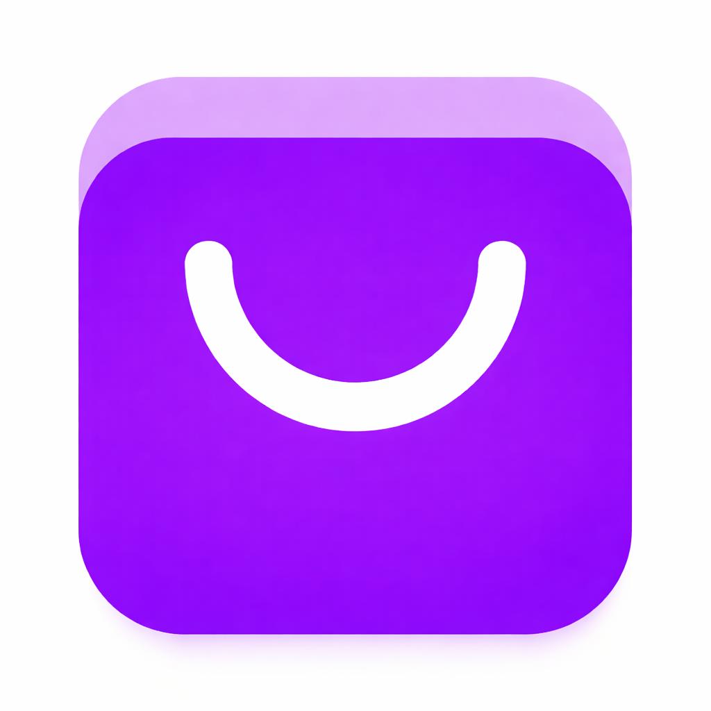

LucidBot
Feb 2026 — Jul 2026
Supervisor del Área de Soporte Técnico
- Lideré y supervisé el equipo de soporte técnico, con seguimiento a incidencias y control de la calidad del servicio.
- Capacité y acompañé a nuevos especialistas, fortaleciendo sus competencias técnicas y operativas.
- Diseñé y apliqué pruebas técnicas para evaluar candidatos en procesos de selección.
- Desarrollé implementaciones personalizadas de asistentes de IA y optimicé flujos conversacionales para distintas marcas.
Oct 2025 — Ene 2026
Implementador de Procesos Automatizados con IA
- Construí asistentes de IA desde cero, con flujos conversacionales según los requerimientos de cada cliente.
- Integré servicios externos mediante APIs REST para conectar plataformas y automatizar procesos.
- Configuré y optimicé prompts, y validé estructuras JSON con pruebas para garantizar implementaciones estables.
May 2025 — Sep 2025
Especialista en Soporte
- Diagnostiqué y corregí fallos de configuración y comportamiento en asistentes de IA, validando cada cambio con pruebas funcionales.
- Optimicé prompts y adapté flujos conversacionales a las necesidades de cada cliente.